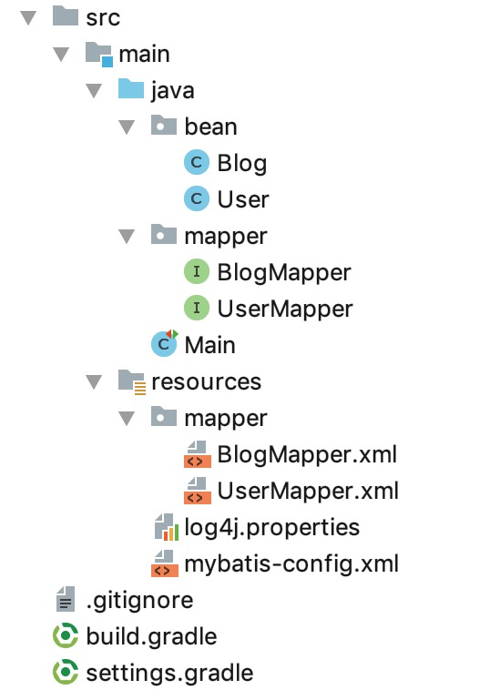

14. 一对一和一对多的延迟加载
在13. 一对一和一对多的实现 我们了解了 mybatis 如何实现一对一和一对多，它的实现方案是通过写一个SQL取出两张表结合在一起的所有数据，然后mybatis稍作处理进行返回。还有一种实现方案是，写两个单独的 SQL ，通过id等业务字段进行关联，然后分别执行，得到最终结果。这种方案，还有一个优势，就是支持延迟加载。
本节示例代码在 mybatis-demo-013 ，基于13. 一对一和一对多的实现 中的示例 mybatis-demo-012 。
数据准备
见 01. 数据准备。
user表和blog表的默认内容如下：
mysql> select * from user;
+----+--------+----------------+----------+
| id | name | email | password |
+----+--------+----------------+----------+
| 1 | letian | letian@111.com | 123 |
| 2 | xiaosi | xiaosi@111.com | 123 |
+----+--------+----------------+----------+
mysql> select * from blog;
+----+----------+---------------+--------------+
| id | owner_id | title | content |
+----+----------+---------------+--------------+
| 1 | 1 | 标题1 | 文本1 |
| 2 | 1 | 标题2 | 文本2 |
| 3 | 1 | 标题3 | 文本3 |
| 4 | 1 | 标题4 | 文本4 |
| 5 | 1 | 标题5 | 文本5 |
| 6 | 2 | 标题21 | 文本21 |
| 7 | 1 | 你好, World | 你好, 😆 |
+----+----------+---------------+--------------+
项目结构
使用 IDEA 创建 gradle 项目，最终结构如下：

根据id查询博客及其所属用户信息
在 BlogMapper 接口中新增方法：
Blog findById(Long id);
在 BlogMapper.xml 中增加映射：
<resultMap id="blogResult" type="bean.Blog">
<result property="id" column="blog_id"/>
<result property="ownerId" column="user_id"/>
<result property="title" column="blog_title"/>
<result property="content" column="blog_content"/>
<association property="user"
javaType="bean.User"
select="findOwnerOfBlog"
column="user_id" />
</resultMap>
<resultMap id="userResult" type="bean.User">
<result property="id" column="user_id"/>
<result property="name" column="user_name"/>
<result property="email" column="user_email"/>
<result property="password" column="user_password"/>
</resultMap>
<select id="findById" parameterType="Long" resultMap="blogResult" resultType="bean.Blog">
SELECT
id AS blog_id,
id AS user_id,
title AS blog_title,
content AS blog_content
FROM
blog
WHERE
id = #{id};
</select>
<select id="findOwnerOfBlog" parameterType="int" resultMap="userResult" resultType="bean.User">
SELECT
id user_id,
name user_name,
email user_email,
password user_password
FROM
user
WHERE
id=#{user_id};
</select>
findById 方法是和 <select id="findById"></select>对应的。 <select id="findById"></select> 的SQL 只是从 blog表中读取数据，它的resultMap属性值是blogResult，对应<resultMap id="blogResult"></resultMap>。而<resultMap id="blogResult"></resultMap>中的<association>使用了select和column属性：
<association property="user"
javaType="bean.User"
select="findOwnerOfBlog"
column="user_id" />
selecct对应的值是findOwnerOfBlog，意思是找<select id="findOwnerOfBlog"><select>，column的值是user_id，意思是将user_id 的值传到<select id="findOwnerOfBlog"><select>中。
在 Main 类中编写示例代码：
@Test
public void test_03() throws IOException {
SqlSession sqlSession = getSqlSession();
BlogMapper blogMapper = sqlSession.getMapper(BlogMapper.class);
Blog blog = blogMapper.findById(1L);
log.info("id:{}, title:{}, content:{}", blog.getId(), blog.getTitle(), blog.getContent());
log.info("user: {}", blog.getUser());
}
执行结果：
DEBUG [main] - Logging initialized using 'class org.apache.ibatis.logging.slf4j.Slf4jImpl' adapter.
DEBUG [main] - PooledDataSource forcefully closed/removed all connections.
DEBUG [main] - PooledDataSource forcefully closed/removed all connections.
DEBUG [main] - PooledDataSource forcefully closed/removed all connections.
DEBUG [main] - PooledDataSource forcefully closed/removed all connections.
DEBUG [main] - Opening JDBC Connection
DEBUG [main] - Created connection 278934944.
DEBUG [main] - Setting autocommit to false on JDBC Connection [com.mysql.jdbc.JDBC4Connection@10a035a0]
DEBUG [main] - ==> Preparing: SELECT id AS blog_id, id AS user_id, title AS blog_title, content AS blog_content FROM blog WHERE id = ?;
DEBUG [main] - ==> Parameters: 1(Long)
DEBUG [main] - ====> Preparing: SELECT id user_id, name user_name, email user_email, password user_password FROM user WHERE id=?;
DEBUG [main] - ====> Parameters: 1(Integer)
DEBUG [main] - <==== Total: 1
DEBUG [main] - <== Total: 1
INFO [main] - id:1, title:标题1, content:文本1
INFO [main] - user: User(id=1, name=letian, email=letian@111.com, password=123, blogs=null)
可以看到两个SQL依次执行。
如何设置延迟加载
上面的示例中，在我们未获取 user 信息时，就已经把user信息取出来了。如何做到，用到再加载，也就是延迟加载呢？
很简单，在 mybatis-config.xml 加入：
<settings>
<setting name="lazyLoadingEnabled" value="true"/>
<setting name="aggressiveLazyLoading" value="false"/>
</settings>
再次执行上面的示例代码，结果是：
DEBUG [main] - Logging initialized using 'class org.apache.ibatis.logging.slf4j.Slf4jImpl' adapter.
DEBUG [main] - PooledDataSource forcefully closed/removed all connections.
DEBUG [main] - PooledDataSource forcefully closed/removed all connections.
DEBUG [main] - PooledDataSource forcefully closed/removed all connections.
DEBUG [main] - PooledDataSource forcefully closed/removed all connections.
DEBUG [main] - Opening JDBC Connection
DEBUG [main] - Created connection 1209669119.
DEBUG [main] - Setting autocommit to false on JDBC Connection [com.mysql.jdbc.JDBC4Connection@481a15ff]
DEBUG [main] - ==> Preparing: SELECT id AS blog_id, id AS user_id, title AS blog_title, content AS blog_content FROM blog WHERE id = ?;
DEBUG [main] - ==> Parameters: 1(Long)
DEBUG [main] - <== Total: 1
INFO [main] - id:1, title:标题1, content:文本1
DEBUG [main] - ==> Preparing: SELECT id user_id, name user_name, email user_email, password user_password FROM user WHERE id=?;
DEBUG [main] - ==> Parameters: 1(Integer)
DEBUG [main] - <== Total: 1
INFO [main] - user: User(id=1, name=letian, email=letian@111.com, password=123, blogs=null)
注意，INFO [main] - id:1, title:标题1, content:文本1和INFO [main] - user: User(id=1, name=letian, email=letian@111.com, password=123, blogs=null)之间，mybatis输出了查找用户信息的日志，这就是延迟加载。